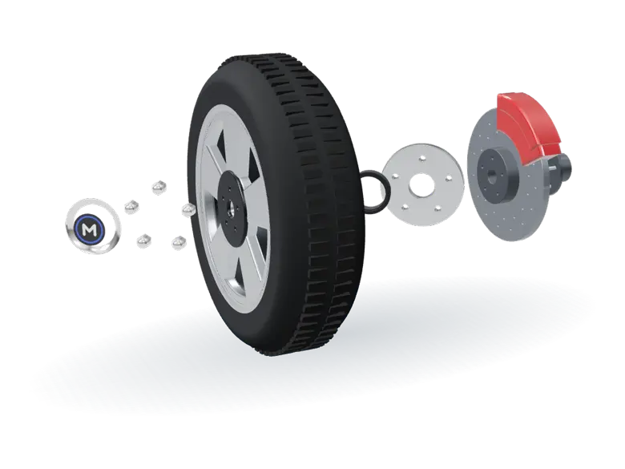

Acessórios de roda, direto da fábrica.
A Metalplas fabrica em Cajamar, SP, a calota de centro, o anel centralizador, a capa de parafuso e o espaçador que a sua loja vende. Atendemos revendas em todo o Brasil.
Atendimento de segunda a sexta, das 8h30 às 18h.
